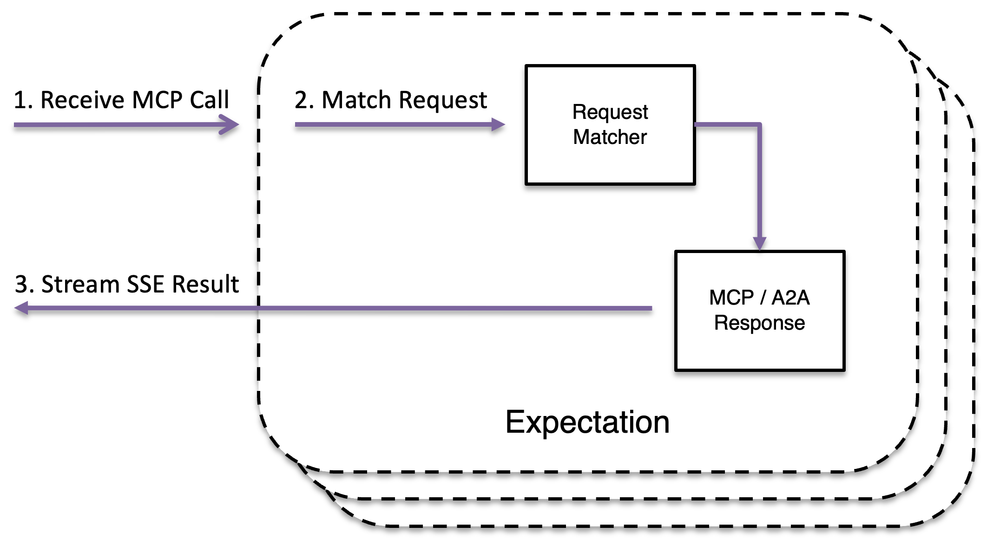

MockServer can mock AI protocol servers — including MCP (Model Context Protocol) servers and A2A (Agent-to-Agent Protocol) agents — enabling you to test AI clients against predictable mock services without running real AI infrastructure.
This is distinct from MockServer's built-in MCP control plane (which lets AI assistants control MockServer). These features let you mock other people's MCP and A2A servers. For mocking LLM API responses (OpenAI, Anthropic, Gemini, etc.) with provider-correct formatting and streaming, see LLM Response Mocking.

{% include_subpage _includes/ai_protocol_mocking.html %}